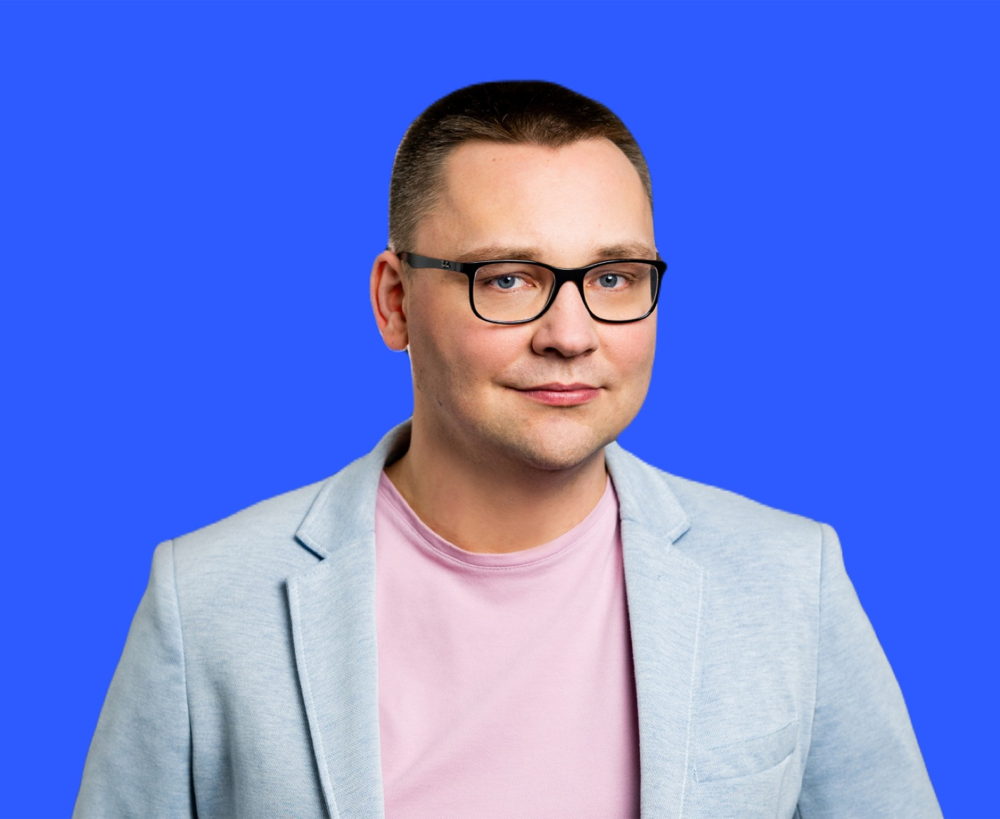
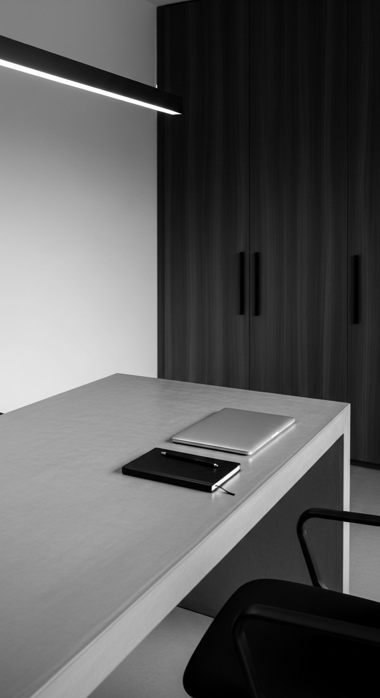

// Teza tygodnia
Nr 14
Najpierw zobacz, gdzie czeka praca. Potem automatyzuj.
// Przemysław Broniszewski

// Z warsztatu
Zespół nie potrzebował nowego narzędzia. Potrzebował zgody, kto decyduje o jakości.
Przemysław Broniszewski
Architekt procesów · broniszewski.net// O mnie
Pomagam zespołom wpiąć AI w proces, który już działa.
// Case study · logistyka
−48%
Tyle krócej czeka pull request na merge po 6 tygodniach pilotażu.
// Warsztat · prompt
# Kontekst
Diff dotyczy modułu płatności.
# Sprawdź
- czy zmiana ma test
- czy nazwy mówią, co robią
- czy błąd da się odtworzyć
# Format
Maksymalnie 5 uwag, od najważniejszej.
// Mapa procesu
// Zanim kupisz licencje
2 / 5
// Case study
3 s
aktualizacja statusu, było 15 min
0
utraconych zdarzeń od startu
// Rysunek 01
ADR-014
// Pytanie do Ciebie
// Mit kontra fakt
Mit
AI zastąpi juniorów.
Fakt
Zapisy otwarte
Warsztat online
14.11
Czwartek · 18:00-20:00
// Pilotaż krok po kroku
04 / 06
// Słownik zespołu
Hasło 07
rzecz. m. · lm. długi procesowe
Zob. teżdług techniczny, ADR
// Notatka nr 14
Wrzesień 2026
Gdy zespół przestaje pytać, rzadko znaczy to, że wszystko jest jasne. Częściej pytanie stało się za drogie.

W zeszłym tygodniu zespół zapytał mnie, jakie narzędzie AI kupić.
Zapytałem, ile trwa ich review. Nikt nie wiedział.
Nie przyspieszysz czegoś, czego nie mierzysz.
Zaproponowałem start od arkusza, nie od licencji.
// Dane z pilotażu
// Architektura
Case study
Jak zaprojektowałem replikację bez okna serwisowego.